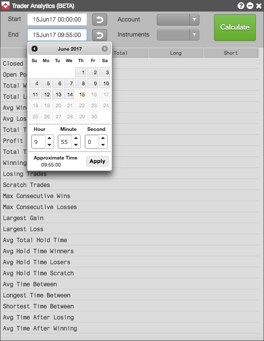
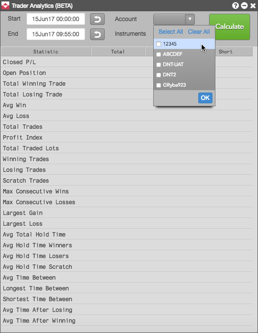
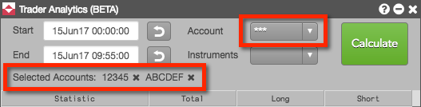
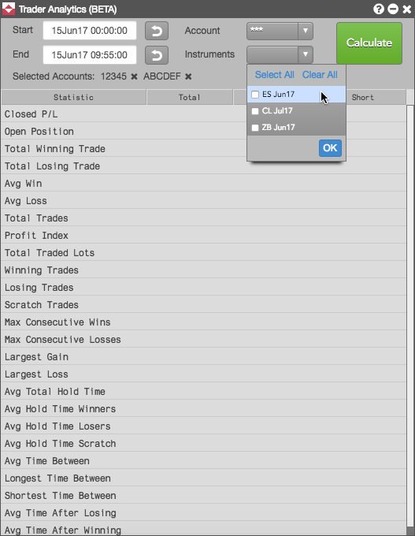
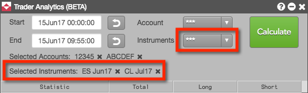
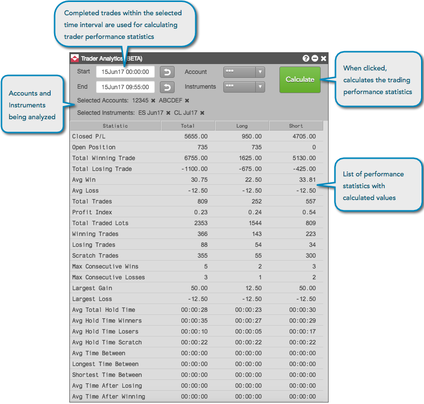

To calculate trader performance statistics:
Click the Start and End selectors to set a time interval for the calculations and click Apply.
Performance statistics are calculated only for trades that occurred during the selected time interval. If needed, check the Fills widget for fills within the time range that you want to analyze.

Note: Click to reset the Start field to midnight, or to reset the End field to the current time.
Select an account or multiple accounts from the drop-down list in the Account field.
You can calculate statistics for all accounts assigned to a trader by using the default setting of All.

Selected accounts are listed below the time interval. Click the x next to a selected account to remove it from the calculation. When multiple accounts are selected, asterisks are displayed in the Accounts selector.

Select an instrument or multiple instruments from the drop-down list in the Instruments field.
Only instruments with trades within the selected time range appear in the list. You can calculate statistics for all instruments traded in the account by using the default setting of All.

Selected instruments are displayed below the time interval. Click the x next to an instrument to remove it from the calculation. When multiple instruments are selected, asterisks are displayed in the Instruments selector.

Click Calculate.
The trader performance statistics are displayed in Trader Analytics for the selected account(s) and instrument(s).
